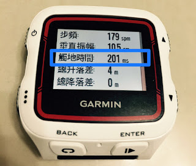

利用「觸地時間÷騰空時間」來量化自己的跑步技術
前一篇文章〈跑步前傾的時機？〉有提過，除了風阻之外，跑步時的摩擦力來自於「腳掌落地時」。腳掌的觸地時間愈短，落地後所產生的摩擦力也愈小。
跑步時的每一步都可分騰空期與觸地期，主要的摩擦力來自於觸地期。腳掌觸地時間愈短，落地後所產生的摩擦力也愈小。換句話說，我們希望每一步所花的時間之中，觸地期的比例(Contact Fly Ratio, 簡稱 CFR)愈少愈好。
曾經是十公里的女子世界紀錄保持人 Dibaba，當年他以 29 分 54 秒的成績拿下 10 公里女子奧運冠軍時，平均每步的觸地時間是 130 毫秒、騰空時間是 180 毫秒
→觸地時間÷騰空時間＝130÷180 = 0.72
我們再來看看短距離衝刺選手的例子：二〇〇九年尤塞恩．波特（Usain Bolt）在柏林以 9.58 秒的成績打破他自己所保持的一百公尺世界紀錄。他總共只跑了四十一步，總觸地時間 3.2 秒，騰空時間為 6.38 秒
→觸地時間÷騰空時間＝3.2÷6.38 = 0.5
前陣子在幫花蓮的一位朋友分析跑步動作時，發現它在以馬拉配速(M 配速)跑時，步頻高達 200bpm(每分鐘 200 步，每步費時 300 毫秒)，但觸地時間就佔了 230 毫秒。雖然步頻很高，看起來很有效率，但觸地時間太長，效率都被吃掉了。
→觸地時間÷騰空時間＝230÷70 = 3.28
因此，高步頻並不等於有較短的觸地時間。觸地時間與步頻應是兩個獨立的數值，我們可以利用這兩個數值來評估自己的跑步技術如何。

某天晚上我利用 Garmin 920 跑了一趟節奏跑五公里，從這次訓練的數據來看：
- 步頻 179bpm(每步 335 毫秒)
- 觸地時間 201 毫秒
從這兩個數據可推算出騰空時間是 134 毫秒(335-201)，因此得到：
- 觸地時間÷騰空時間＝201÷134 = 1.5
結論是：跑者觸地騰空比的極限是「0.5」，但對長距離跑者來說「1.0」就具有頂尖水準的跑步技術，我個人離頂尖還有一大段差距。目前已經為四五十位跑者用影像分析跑姿，平均大約是 2.0。
比值太高的主因是：腳跟先著地、跨步或跟腱靈敏度下降。因為腳跟先著地，所以阿基里斯腱的彈性忘了怎麼用。
訓練方式並不難，就是我們從小都玩過的「跳繩」。建議每次訓練前可以練跳繩 1 分鐘三組到五組（膝蓋微彎，彈起時不要伸直膝蓋）。
體能的高低可以從最大攝氧量看得出來，頂尖的長跑選手通常都在 70~90ml/min/kg，這是生理上的數據，受限於肺容量和心臟大小，練到頂後就不會再進步。但技術卻不受先天限制，可以藉由訓練不斷向上提升……跑者們，開始來跳繩吧！
==
PS 姿勢跑法的技術訓練之一--「跳繩」：